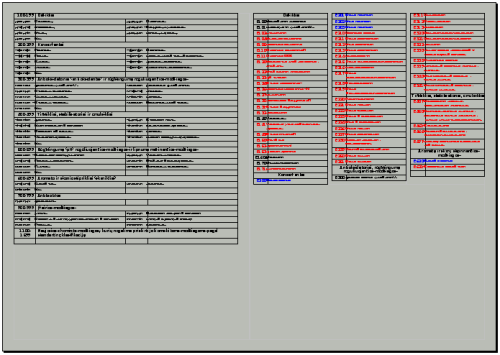

Maistas ir E numeriai
Nesenai tapau donoru, savanoriškai paaukojau savo trombocitus sergantiems, gavau donoro pažymėjimą. Ta proga, teko pasidomėti ką valgyti, kad greičiau atsistatytų atiduotoji kraujo dalis. Taip beskaitinėjant nuklydau į kelis straipsnius apie maistą ir jo priedus, dažnai žymimus su E raide.
Prisiskaičiau labai daug informacijos ir iš naujo supratau, kad didelė dalis visų tu E priedų, maistui suteikia tik kosmetines savybes, o žmogaus organizmui daro didelę žalą. Vienas iš tokių pavyzdžių yra dažikliai, kurie E raidėmis žymimi nuo E100 iki E199. Didelė dalis tų dažiklių yra labai kenksmingi žmogaus sveikatai, sukelia vėžinius susirgimus ir kitokias nelaimes, o viskas, ką tie papildai suteikia maistui – spalva. Rinkdamasis maistą, tikrai mažiausią dėmesį kreipiu į spalvą, tačiau maisto gamintojai, tam skiria daug dėmesio ir prikiša visokių nuodų!
Taip besidomėdamas visais papildais sugalvojau paieškoti, taip vadinamų „cheatsheet“ – lentelė su tam tikra, dažnai naudojama informacija. Tik šiuo atveju, ieškojau „cheatsheet“, kur būtų surašyti vis kenksmingiausi E numeriai, kurių reikėtų vengti. Tačiau nieko panašaus neradęs, nusprendžiau pats pasidaryti. Bendras vaizdas atrodo maždaug taip:
{kind=link}
Kartu pateikiu failus ODF ir PDF formatais:
enumbers.pdf – PDF failas, iš kurio galėsite atsispausdinti
enumbers.odt – ODF failas, kurį galite redaguoti ir tobulinti laikydamiesi GNU FDL licenzijos sąlygų
Ateityje planuoju nuolat papildyti ir tobulinti šį failą, kai tik surasiu daugiau laiko įtraukti daugiau pavojingų arba tyrimais įrodytų, saugių E numerių.
Plačiau apie visus E galite pasidomėti food-info.net/lt svetainėje, lietuvių kalba.